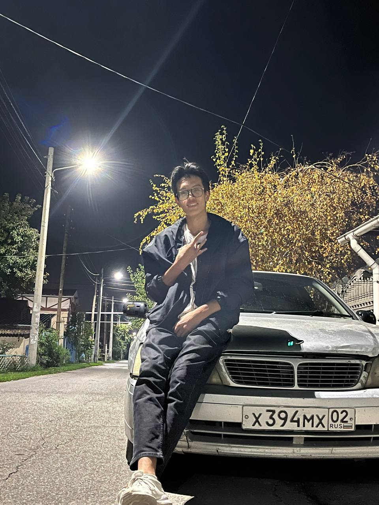
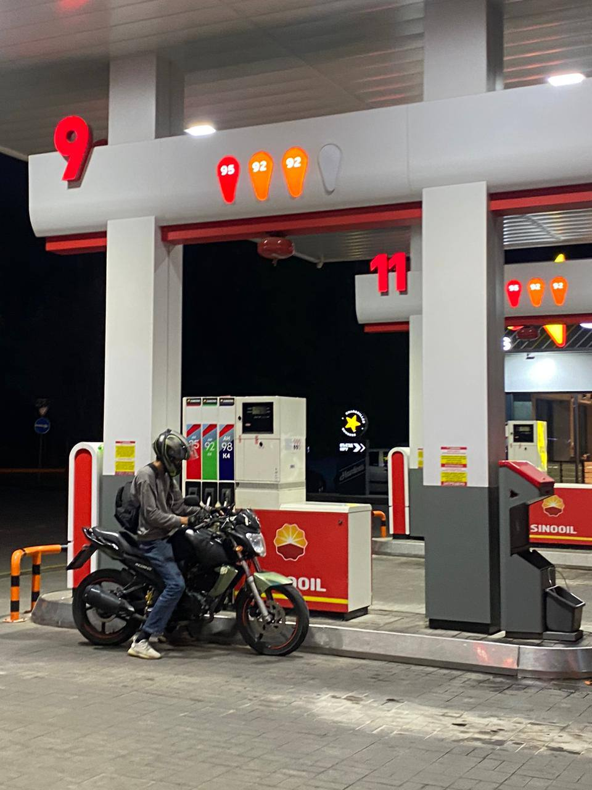

Кто Я?

Это - я. Меня зовут Айдын Жиенбаев, в ностаящий момент владелец
этого японского чудо, под названием Nissan Bluebird U14.
Я студент 3-его курса университета Муит. Учусь на IT-специалист.
Любовь к машинам у меня с рождения. Люблю японский домашний маркет, так же
известный как JDM культура. Любовь к этой культуре открылся у меня после просмотро
анимационного сериала "initial D".
Теперь поговорим о BLUEBIRD:
Nissan Bluebird (яп. 日産・ブルーバード) — семейство легковых автомобилей среднего размера, выпускавшихся японским автопроизводителем Nissan с 1959 по 2001 год. Традиционными конкурентами являлись Toyota Corona почти с самого начала производства. Nissan перешел на свободный стиль кузова для последнего поколения U14 (1996—2001), появившегося в январе 1996 года. Американская Altima превратилась в отдельную линейку автомобилей, с новым кодом шасси L-серии.
Теперь поговорим о BLUEBIRD:
Nissan Bluebird (яп. 日産・ブルーバード) — семейство легковых автомобилей среднего размера, выпускавшихся японским автопроизводителем Nissan с 1959 по 2001 год. Традиционными конкурентами являлись Toyota Corona почти с самого начала производства. Nissan перешел на свободный стиль кузова для последнего поколения U14 (1996—2001), появившегося в январе 1996 года. Американская Altima превратилась в отдельную линейку автомобилей, с новым кодом шасси L-серии.
Я и Мотоцикл
Как у меня появился интерес к двух колёcным транспортным средствам?
2 года назад я купил себе 125 кубовый скутер, что бы работать на доставке. Со временем этот скутер стал часто сломаться. После очередного ломки, я решил продать и купить себе что то по мощнее,что то типа 150 кубовый скутер. Но сидя в kolesa.kz Я нашел эту красавицу. И купил её, через неделю получил категорию А. Затем начал знакомится с другими мотоциклистами. И оказался не ошибся выбором: Мир мотоцикла это совсем другой мир: громкие выхлопы, мото клубы, мотобратство, покатушки по ночному городу, всё это начал влюблять меня в себя
Что это за мотоцикл?
Racer Nitro RC250Ck Любительский мотоцикл, тип: Street('Naked')Кубатура: 250CC. Китайский бюджетный мотоцикл, созданный для города, под сиденем 19 л.с. Двигатель вертикальный с установленным дополнительно балансировочным валом с воздушным охлаждением, благодаря чему работа двигателя стабильна даже на больших оборотах.

2 года назад я купил себе 125 кубовый скутер, что бы работать на доставке. Со временем этот скутер стал часто сломаться. После очередного ломки, я решил продать и купить себе что то по мощнее,что то типа 150 кубовый скутер. Но сидя в kolesa.kz Я нашел эту красавицу. И купил её, через неделю получил категорию А. Затем начал знакомится с другими мотоциклистами. И оказался не ошибся выбором: Мир мотоцикла это совсем другой мир: громкие выхлопы, мото клубы, мотобратство, покатушки по ночному городу, всё это начал влюблять меня в себя
Что это за мотоцикл?
Racer Nitro RC250Ck Любительский мотоцикл, тип: Street('Naked')Кубатура: 250CC. Китайский бюджетный мотоцикл, созданный для города, под сиденем 19 л.с. Двигатель вертикальный с установленным дополнительно балансировочным валом с воздушным охлаждением, благодаря чему работа двигателя стабильна даже на больших оборотах.